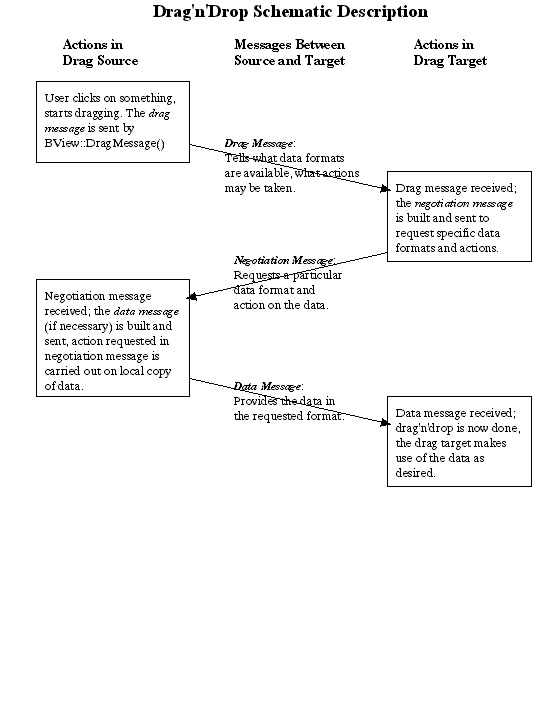

| Be Book Table of Contents |
This is the reference document for constructing BMessage objects as used in BeOS' standard negotiated drag'n'drop actions. If you're reading it for the first time, you should probably read the entire thing. If you want to look up something and you're reading this with a browser, you can jump to any of the following:
1. Simple vs. Negotiated Drag'n'Drop
3. BMessage Formats in Negotiated Drag'n'Drop
3a. Protocol for the drag message
3b. Protocol for the Negotiation Message
3c. Protocol for the Data Message
4. Summary of the Negotiated Drag'n'Drop Protocol
Drag and Drop makes use of a number of elements of the BeOS programming kit, and you'll need to be at least reasonably familiar with the following topics, in order to be comfortable reading this document:
Roughly speaking, you can do two different kinds of drag and drop operations; both appear the same to the user, but they differ in the complexity of the background communication between the source of the drag, and the drop target.
A simple drag'n'drop is one where the action of dragging and dropping corresponds internally to a single BMessage being sent, from the origin of the drag to the drop target. This was the original drag'n'drop protocol for the BeOS, and is still highly useful in dragging and dropping which takes place within a single application, or within a tightly coupled set of applications which "know about" one another. For example, you could drag around drawing elements of a drawing program using this protocol; each drag operation would result in the drawing application sending a BMessage within itself, and that BMessage would contain the data necessary to indicate which drawing element had been moved, and to where. Using the built in drag'n'drop abilities of the BeOS in this manner will lessen your own workload, since many of the most basic aspects, such as visually dragging a bitmap around on the screen, are handled automatically.
A negotiated drag and drop is used in a more general context, when the originator of a drag and the receiver (drop target) of that drag do not necessarily know anything about one another. This more general drag'n'drop is necessary if we wish to make usage of the BeOS, particularly it's media-related applications, as intuitive to the user as possible. For example, the user should expect to be able to drag an image from one graphics program (say a viewer) to another graphics program (such as a paint program) with no difficulty. However, there are many different underlying data formats for representing images, and the two graphics programs will have to negotiate (with the aid of the Translation kit) for the most suitable or desirable format.
Note that the negotiated drag'n'drop protocol is not a "hard and fast" requirement; it is not enforced by the system, and could easily be modified; for example, you might need a particularly complex negotiation that takes more steps than defined in the standard. The major user of negotiated drag'n'drop you are likely to encounter right now is in Tracker, and we will talk about that in more detail later. Other applications may support negotiated drag'n'drop or may not. Also note that a simpler protocol was originally defined, and may still be used by older applications. It's easy to make your code handle this older protocol; see the later section on "Handling the Old Drag'n'Drop Protocol".
Let's assume the user is working with two applications, and is going to drag something from the first application (which we'll call the sender application) to the second application (which we'll call the receiver application.) In a nutshell, here are the steps that make up this entire process:
1. Detection: Code in a BView object of the sender application notices that the user has clicked on something of interest, and started dragging it. The monitoring code that notices this is usually spread out between the BView::MouseDown() and BView::MouseMoved() functions, and typically has to differentiate between the start of a real drag and drop, or a click that might (for example) select an object without dragging it, but that moves just one or two pixels because the user has a slightly jittery hand. The drag detection code will typically have to use BView::SetMouseEventMask() to temporarily enable full reporting of mouse movement (which is not normally reported to the application, for efficiency reasons).
2. Initiation: Once the sender application's detection code has decided a drag and drop action has been started, it initiates the drag and drop internally, by creating a BMessage object containing information about the nature of the object being dragged, and then passing that BMessage to the BView::DragMessage() function. BView::DragMessage() also determines how the object being dragged appears visually to the user; you can pass it a BBitmap, in which case it will drag a cool picture around the screen, or you can pass it a BRect, in which case it will drag a boring old rectangular outline. After calling DragMessage, the sender's code should remember to delete its own copy of the BMessage. Note: The sender should not delete the BBitmap it passes to DragMessage; this will be done by the system
3. Drag: This is the easy part; once the sender application has initiated the drag, as described in the previous step, dragging a visual representation around the screen is handled by the system. The next time application code is invoked is on the . . .
4. Drop: The user releases the mouse button while the mouse is in a BView of the receiver application. This causes the MessageReceived() function of the recipient BView to be invoked, with the dragged BMessage as its received message. This is the first of three BMessage objects that can be sent as part of a single drag and drop action. We'll call this first message the drag message. In a simple drag'n'drop, the drag message can contain just about anything you want it to; since both the sender and the receiver "know about" one another, they presumably have a common private protocol, and the receiver can analyze the message and do whatever is required. In a negotiated drag'n'drop, the drag message does not typically carry the data that defines the object being dropped; for example, if you drop a block of text, the message that is dropped normally does not contain the text that was dragged. Instead, the drag message contains information about the different formats and methods by which the sender application may supply the data to the receiver application, and about which actions the receiver application can request of the sender application.
5. Negotiation [optional, used in negotiated drag'n'drop]: The receiver application replies to the drag message with a second message, which is dispatched back to the sender application using the BMessage::SendReply() function. We'll call this second message the negotiation message. The receiver creates the negotiation message by looking through the options supplied by the sender in the drag message, choosing one or more, and including those option in the message so that the sender will know which of its possible replies is actually desired. The negotiation message also contains information about what the receiver would like the sender to do with the dragged data; for example, if you drag a file to the Trash, the negotiation message sent back "from" the Trash will include a request that the sender delete the dragged data.
6. Data Transmission [optional, used in negotiated drag'n'drop]: The sender examines the negotiation message sent back to it by the receiver, to find out which available data format the receiver wants the data in. The sender then packages up the data, and dispatches it off to the receiver in the data message. (Optionally, the sender can, at the request of the receiver, create a file through which it passes the data to the receiver, rather than passing the data directly in the BMessage. We'll talk about this when we discuss the details of the drop, negotiation, and data messages.)
7. Completion [optional, used in negotiated drag'n'drop]: The receiver gets the data message from the sender, extracts the desired data, and uses it in whatever way it wants.
This sounds more complex than it is. A picture is worth a thousand words, so here is a simplified schematic of the process:

Before going on to more complex matters, let's see just how simple "simple" drag'n'drop can be. The code below defines a very simple application, which lets one drag around a black square in a window. The application is both the sender (i.e., you click on the square in the application window to start the drag), and the receiver (you release the mouse button within the application window, to reposition the square). Most of the program code is "boilerplate", similar to what would be found in any application involving a BView. Those parts of the code pertaining specifically to the drag and drop are given in bold.
/* Drag the black square around using drag'n'drop--a very
simple-minded program. The DETECTION, INITIATIOIN, DRAG,
and DROP steps correspond to those of the same name given
in the overview section, "Basics of Drag and Drop". */
#include <Application.h>
#include <InterfaceKit.h>
rgb_color black = {0, 0, 0, 64};
const char *APP_SIGNATURE = "application/x-vnd.Be-MyDragnDrop";
/* The constant below is arbitrary--the fact that is is 'drag' is
meaningless. However, it MUST be chosen so as not to conflict
with system-wide BMessage 'what' values--see the BMessage
documentation for details. */
const uint32 MY_DRAG_ACTION = 'drag';
class MyDragDropView : public BView {
private:
BPoint _button_click;
BRect _SquareSides;
public:
MyDragDropView(BRect rect) : BView(rect, "",
B_FOLLOW_ALL_SIDES, B_WILL_DRAW) {
_SquareSides = BRect(20, 20, 90, 90);
}
void Draw(BRect where) {
SetHighColor(black);
FillRect(_SquareSides);
}
void MouseDown( BPoint where ) {
/* 1. DETECTION : Our detection code is pretty simple-minded;
if the user clicks in the black square, they're starting a drag. */
if (_SquareSides.Contains(where)) {
// Turn on the event mask for all pointer events, so we'll know when
// the user lets go of the mouse button.
SetMouseEventMask( B_POINTER_EVENTS, 0 );
/* 2. INITIATION : Create a BMessage instance, and pass it
to BView::DragMessage() to start the drag. */
BMessage *drag_message = new BMessage( MY_DRAG_ACTION );
/* Remember, in the drag message, where the drag started */
drag_message->AddPoint("click_location", where);
DragMessage( drag_message, _SquareSides, this );
/* 3. DRAG : this is handled by the user and system, we
don't write any code at all to do the dragging. The
next step will take place in the MessageReceived() function. */
/* DON'T FORGET TO DELETE THE MESSAGE AFTER YOU'RE DONE*/
delete drag_message;
}
}; /* end of MouseDown() */
void MessageReceived(BMessage *msg) {
/* 4. DROP : MessageReceived() can called for many different
messages. We're only interested in ones with a 'what'
field of MY_DRAG_ACTION, as was created in the MouseDown()
function. */
if (msg->what == MY_DRAG_ACTION) {
BPoint clicked;
/* We put "click_location" into the original message, now
we can get it out */
msg->FindPoint("click_location", &clicked);
BPoint whereto;
/* The "_drop_point_" message field is automatically
inserted by the OS; is is the screen point the
mouse was on when the drag ended. */
msg->FindPoint("_drop_point_", &whereto);
/* Convert "_drop_point_" to view coordinates. */
whereto = ConvertFromScreen(whereto);
/* Move the square by the same amount the mouse moved
in the drag. */
_SquareSides.OffsetBy(whereto-clicked);
/* Ensure the view is redrawn */
Invalidate();
}
}; /* end of MessageReceived() */
}; /* end of MyDragDropView class */
class MyDragDropWindow : public BWindow {
public:
MyDragDropWindow(BRect frame)
: BWindow(frame, "Drag'n'Drop Example", B_TITLED_WINDOW, B_NOT_ZOOMABLE) {
interior = new MyDragDropView(this->Bounds());
AddChild(interior);
Show();
}
bool QuitRequested() {
be_app->PostMessage(B_QUIT_REQUESTED);
return true;
}
private:
BView *interior;
}; /* end of MyDragDropWindow class */
class MyDragDropApp : public BApplication {
public:
MyDragDropApp::MyDragDropApp() : BApplication(APP_SIGNATURE) {
BRect windowRect;
windowRect.Set(50,50,349,399);
new MyDragDropWindow(windowRect);
}
private:
MyDragDropWindow *theWindow;
}; /* end of MyDragDropApp class */
/* The "main" function creates and runs the application.*/
int main(void) {
MyDragDropApp *theApp;
theApp = new(MyDragDropApp);
theApp->Run();
delete theApp;
}
With simple drag and drop, you are free to use BMessages more or less as you wish; you simply define a what member constant which will uniquely identify your dropped message to the target, and put whatever data you wish into the body of the message. The receiver will examine the what member of the message and, assuming it understands it at all, should then know how to extract the data (if any) in the body of the message.
Negotiated drag and drop is different, since it assumes that the sender and receiver have no implicit knowledge of each other. In order for the two ends of the action to communicate effectively, they must agree on a standard protocol between them. This protocol takes the form of an agreed-up structure for each of the drag message, negotiation message, and data message, as described in the following sections.
Hint: There's a great little utility called ViewIt, which should be available (as part of a package of utilities called Geb's Goodies) on the usual download sites, such as www.bebits.com. You can drag anything onto ViewIt, and it will display the contents of the drag message.
The drag message is the one initially sent out by the sender application. It must be assigned a what member of B_SIMPLE_DATA by you, the programmer. The message fields in the drag message can be split into those that are provided by you, and those that are filled in automatically by the system. Let's take a look at each of these.
The following drag message fields will need to be filled in by your code. Detailed descriptions of these fields are found below.
"be:types", "be:filetypes", and "be:type_descriptions": These fields indicates the formats the sender is willing to provide data in, and are filled in together.
"be:actions": A list of actions the sender is willing to perform on its data, at the request of the receiver.
"be:clip_name": A suggested name for the data being sent, which may be used at the option of the receiver. This field is optional.
"be:originator", "be:originator_data": used to preserve context information across asynchronous message sendings.
"be:data": This was used by the old [obsolete] drag'n'drop protocol, to contain the data being dragged. You don't need to use it with modern applications.
"_drop_point_", "_drop_offset_": The values in these fields are set automatically by the system; do not set them yourself. They give information about where the drop took place on the screen.
The main purpose of negotiated drag'n'drop is to come up with an optimal compromise between the data formats the sender application can provide something in, and the data formats the receiver can accept that data in. Accordingly, the three most important message fields in the drag message are the "be:types" and "be:filetypes" fields; "be:type_descriptions" accompanies the "be:filetypes" field, so we'll describe it here also.. Each of these fields is filled with a list of string values.
Values for these fields will typically be obtained from the Translation Kit, by asking the Translation Kit which data formats it can provide the dragged data in, and filling the fields in with the information returned by the calls to the Translation Kit. (For example, if appropriate translators are installed on the system, the Translation Kit might be able to translate a bitmap into any of JPEG, GIF, PNG, or TIFF images.)
The specific meanings of these three fields are as follows:
In negotiated drag'n'drop, the sender and receiver negotiate not only the format of the sent data, but also the action performed on that data. Should the data be copied from the sender to the receiver, moved from the sender to the receiver, or something else? The first part of this "actions negotiation" takes place in the drag message via the "be:actions" field.
"be:actions" contains a list of values (32-bit integers actually) which define the actions the sender is will to perform at the request of the receiver. No action will actually be carried out until and unless the receiver requests it. The possible action requests are given by the following constants:
In addition to the above four "standard" actions, there are a few actions which can be carried out specifically when the Tracker is the sender application [xxx does the Tracker have to be the receiver as well? If so, should we even document these actions?]:
[xxx Chris' document implies the Tracker can also make links due to a specific Tracker action, is there something like a B_LINK_SELECTION_TO?]
This is an easy one. If present (it doesn't have to be), it contains a string suggesting a name for the data which will be sent. This name may be used by the receiver; for example, if data is dragged onto the Tracker, the Tracker will try to use the value in "be:clip_name" as the basis for the name of the clipping file it creates from the data. However, the receiver is under no obligation to pay attention to "be:clip_name".
Let's say you're a sender application, and you've asynchronously sent off a drag message. Then you receive a BMessage. Is it the reply to your original message? And if so, how do you access data about the original drag (such as where the mouse was clicked) you might need in order to complete the data message? Since the original drag message was sent asynchronously, your application went merrily on its way immediately after sending, and no longer remembers what the heck it dragged off before. What do you do? This is where "be:originator" and "be:originator_data" come in.
If you fill in "be:originator" and "be:originator_data" properly on all of your outgoing drag messages, then here is what your app can do when it receives a BMessage that may be a negotiation message responding to a previously sent (asynchronous) drag message:
1. Your app checks to ensure that the incoming message has the correct format for a negotiation message (we'll describe the format of negotiation messages in a bit). If it does, then go on...
2. Your app uses BMessage::IsReply() to check if the incoming message is a reply to a previous message.
3. If the incoming message is in fact a reply, your app uses BMessage::Previous() to obtain the original message; the message the incoming message was sent in reply to.
4. Now, your app can examine "be:originator" in the original message, to see if it recognizes that value as indicating a drag message sent out by itself. If it does, then the incoming BMessage is in fact a negotiation message in response to your original drag message; your app can extract necessary context data from "be:originator_data", and go on to construct and send the data message.
This field was used in the original drag'n'drop protocol to carry the dragged data. It is not used in the negotiated drag'n'drop protocol.
This field contains a BPoint giving the screen coordinate of the mouse cursor, when the drag was ended (i.e. when the mouse button was released and the data dropped.) It's added automatically by the system--you don't create or add to it yourself.
Whether you have your application display a bitmap or a rectangular outline during a drag, the dragged area occupies a rectangle. (Though it may not appear so to the user, since with a bitmap, sections of the bitmap can be transparent). "_drop_offset_" gives as a BPoint the distance from the top left point of the dragged area to the position of the mouse cursor within that dragged area. [xxx I think this is correct but just want to be sure.]It's added automatically by the system--you don't create or add to it yourself.
Using a BMessage to pass a large amount of data from one application to another may not be desirable; at the extreme, you may not have enough memory to accommodate the entire BMessage. If you need to pass large amounts of data in a drag'n'drop operation, you may prefer to do so via a file.
As far as passing data by a file goes, the sender application can indicate one of two things when sending the drag message to the receiver:
In both cases, the sender's ability to send data via a file is indicated by a value in the drag message's "be:types" field of B_FILE_MIME_TYPE. If B_FILE_MIME_TYPE is the first entry in the "be:types" field, than the sender will pass data only in a file, and anything else in "be:types" will be ignored; if there are entries in "be:types" before a value of B_FILE_MIME_TYPE, then those entries are types with which the sender is prepared to send data directly in the data message.
If the sender has indicated, via the presence of a B_FILE_MIME_TYPE value in "be:types", that it is willing to pass data via a file, then the formats in which it can provide that file are listed in the "be:filetypes" field. If a value if B_FILE_MIME_TYPE is not present somewhere in the "be:types" field, then the sender is not able to pass data via a file, and any values in the "be:filetypes" field will be ignored.
When the receiver application receives the initial drag message from the sender application, it examines the data message in that message, to ascertain what actions the sender application can carry out, and how it can provide the desired data in the final drag message. Using this information, the receiver application formulates the negotiation message, which it sends back as a reply to the original drag message using the BMessage::SendReply() function.
Recall that the drag message constructed by the sender application contained (among other things) a "be:actions" message field, which indicated the actions the sender was willing to perform upon the dragged data. The allowable actions (at the time of this writing--further actions may be added in the future) are given by the following constants:
When constructing the negotiation message, the receiver application will choose one of the actions listed in the data message's "be:types" message field (remember, not all allowable actions will necessarily be listed in this message field), and use that action as the value of the what member in the negotiation message. This will inform the sender application of which of the possible actions is desired by the receiver.
In addition to the action contained in the what member, the negotiation message may also contain a number of message fields; exactly which message fields are defined depends somewhat on the requested action. The allowable message fields are:
Of course, you can leave out fields that don't apply to a particular action. For example, if the receiver chooses B_TRASH_TARGET as the action (by putting a value of B_TRASH_TARGET into the what member of the negotiation message), no message fields are required; in fact, the sender doesn't even need to respond to a request of B_TRASH_TARGET with a data message, it simply has to delete the dragged data.
The data message is the third and final message sent as part of a negotiated drag'n'drop. It is sent in response to a negotiation message, using the BMessage::SendReply() function, and is sent only if the sender application has elected to pass the dragged data directly in a message. If the sender application passes data to the receiver via a file, no data message is sent. [xxx just want to check, is this correct? It would seem you'd want to at least send confirmation that the write was successful. Or should the receiver just do a node monitor kind of thing?]
If the sender elects to send the dragged data directly in the data message, then the data message will be constructed with the following structure:
Note that when the data messages arrives at the receiver, it may contain more than the single message field described above; other message fields might be added automatically, by parts of the system. However, the message field above is the only one you add.
Negotiated drag'n'drop was defined relatively recently; older applications may still use the "old-style" drag'n'drop. It's simple for your application to take into the account that it might be a receiver for such a drop.
Under the old style drag'n'drop, a single message was sent from the sender to the receiver, with a what member of B_MIME_DATA, and the value of the dragged data in the "be:data" message field. [xxx how is the type of the enclosed data determined?] Since your receiver application will need to monitor for BMessages with a what field of B_MIME_DATA (i.e. your application will need to look for the data messages that might occur as part of a negotiated drag'n'drop), it's simple to add in a bit more code that handles the fact that such a message may occur without being part of a negotiation, and may contain a "be:data" field.
The structure of a drag message is as follows:
The structure of a negotiation message is as follows:
The structure of a data message is as follows:
| Be Book Table of Contents |
Copyright © 2000 Be, Inc. All rights reserved.
Text last modified